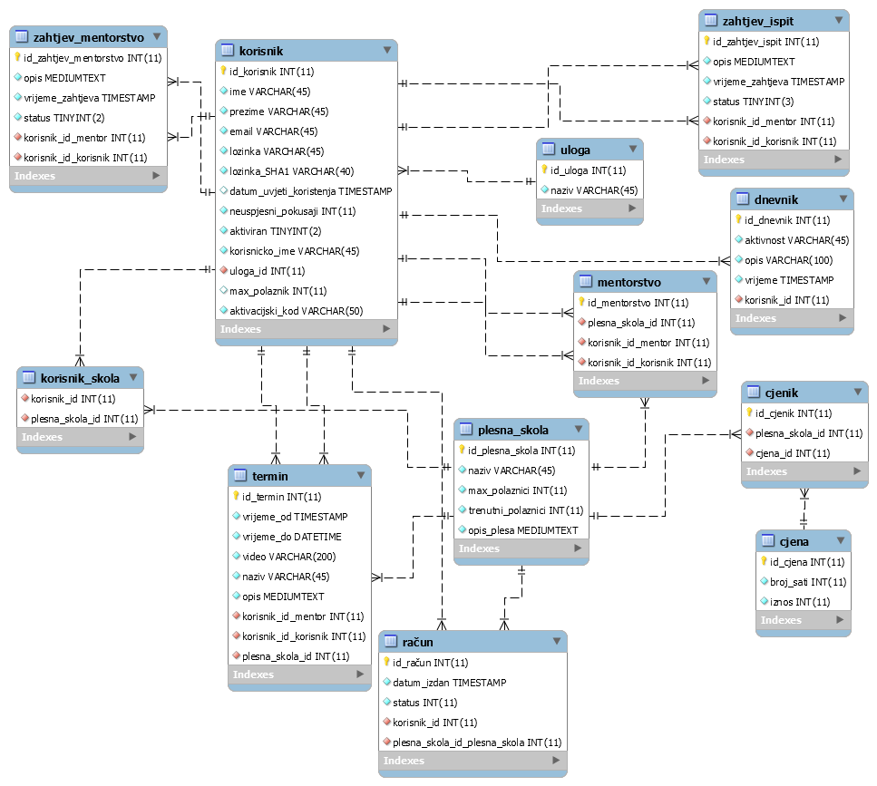

Opis projektnog zadatka
Kao projektni zadatak iz kolegija Web Dizajn i Programiranje izradio sam stranicu/sustav koja ima mogućnost registracije
običnih korisnika, a potom administrator može promovirati registrirane korisnike u moderatore. Registrirani korisnici,
moderatori i administratori imaju različite mogućnosti. Sama svrha stranice je vođenje plesnih škola, odnosno
mogućnost da se vodi sustav plesnih škola kroz web aplikaciju. Administrator ima mogućnost kreirati plesne škole
te im dodjeliti moderatore/mentore koji će voditi plesne škole. Administrator isto tako daje prolaz ili pad na ispitu
kojeg registrirani korisnik priloži te ima uvid u konfiguraciju opcija vezanih uz stranicu. Moderatori kreiraju termine
za plesne škole koje vode i za pojedine polaznike plesnih škola, odobravaju ili odbijaju zahtjeve polaznika plesnih škola.
Registrirani korisnici, odnosno polaznici imaju mogućnost pregleda slobodnih mentora te se mogu prijaviti za mentorstvo kod istog.
Isto tako imaju mogućnost vidjeti popis svojih termina te popis škola koje su trenutno aktivne u sustavu. Neregistrirani korisnici
imaju mogućnost da vide popis škola koje postoje u sustavu, ali se na njih ne mogu prijaviti kao polaznici. Neregistrirani
korisnici isto tako vide i popis mentora koji rade u pojedinim aktivnim školama te u kojim školama su mentori prijavljeni.
Opis projektnog rješenja
Rješenje nije u cjelosti realizirano. Kod neregistriranog korisnika nedostaje galerija slika, kod registriranog korisnika
nedostaje plaćanje i pregled računa. Kod moderatora nedostaje aplikativna statistika dok kod administratora nedostaje konfiguracija
sustava, pregled i pretraživanje dnevnika, statistika rada sustava i grafički prikazi statistike.
Era dijagram

Popis korištenih tehnologija i alata
- PHP
- JavaScript
- jQuery
- MySQL Workbench
- phpStorm
- FileZilla
Popis skripti
- aktivacija.php: Aktiviranje računa putem linka te se korisnik preusmjeri na početnu stranicu
- footer.php: Podnožje stranice
- header_navigation.php: Zaglavlje stranice koje uključuje sve potrebne skripte
- index.php: Početna stranica
- izmjeni_korisnika.php: Skripta koja izvršava otključava zaključani korisnički račun
- korisnicka_imena.php: Enkodira json polje svih korisnika za provjeru korisnickih imena
- kreirajSkolu.php: Omogućuje administratoru da kreira novu plesnu školu
- odabranaSkola.php: Daje pregled detalja odabrane škole u popisu plesnih škola
- odjava.php: Odjavljuje prijavljenosg korisnika/uništava sesiju
- pomocneFunkcije.php: Sadrži sve dijelove koda u funkcijama zbog smanjenja redundantnosti
- popis_mentori.php: Ispisuje popis svih mentora i plesnih škola u kojima mentori rade
- popis_plesneSkole.php: Ispisuje sve aktivne plesne škole te daje opciju detaljnog pregleda
- popisTermin.php: Daje pregled svih termina za trenutnog registriranog korisnika
- posaljiZahtjevMentorstvo.php: Daje mogućnost korisniku da pošalje zahtjev za mentorstvom odabranom mentoru
- potvrdaZahtjevMentorstvo.php: Daje mogućnost mentoru da potvrdi zahtjeve koji još nisu potvrđeni
- potvrdiIspit.php: Daje mogućnost administratoru da dodijeli prolaz/pad odabranom zahtjevu za ispit
- prijava.php: Stranica za prijavu registriranih korisnika
- registracija.php: Stranica za registraciju neregistriranih korisnika
- slobodniMentori.php: Ispisuje popis slobodnih mentora te daje mogućnost slanja zahtjeva za mentorstvo
- zaboravljenaLozinka.php: Uz upis e-maila šalje novu lozinku korisniku te mjenja stanje u bazi
- zahtjeviIspit.php: Ispisuje sve zahtjeve za ispit od registriranih korisnika
- ZahtjevMentorstvo.php: Ispisuje sve zahtjeve za mentorstvo od registriranih korisnika
- zakljucaniKorisnici.php: Ispisuje popis zaključanih korisnika uz mogućnost odključavanja
Popis vanjskih modula
- Google reCaptcha: korišteno kod registracije